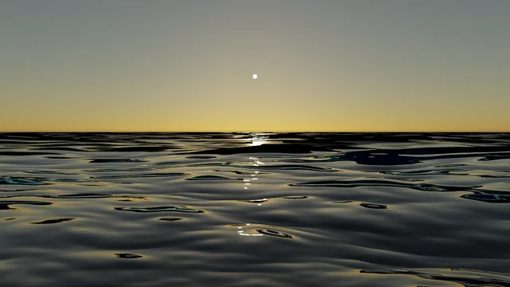
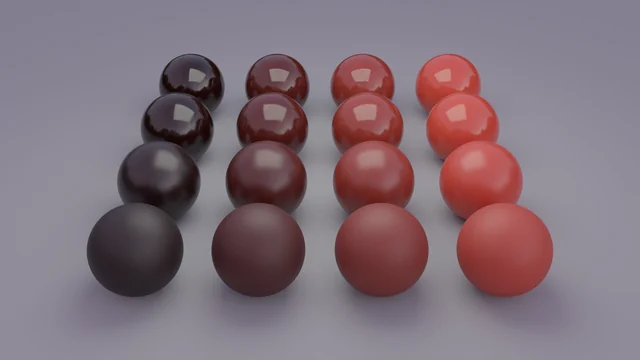
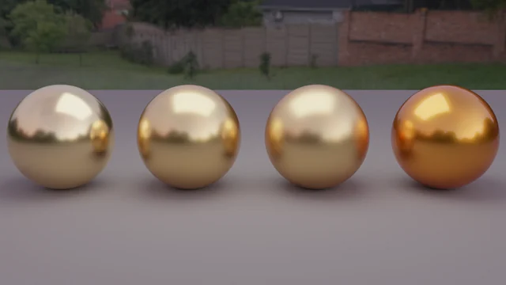
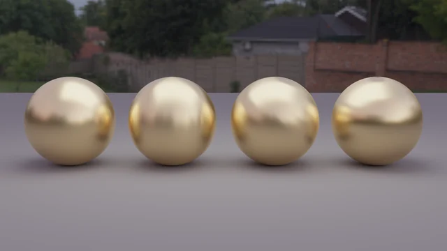
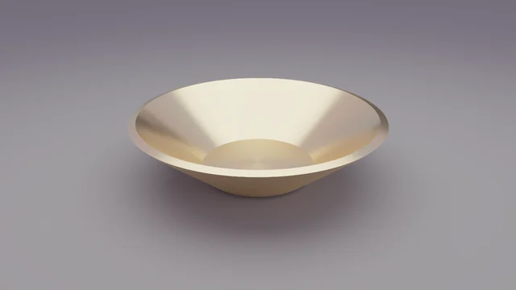

← トップに戻る
Gallery
描いた画像
自作の3Dレンダラー GoLD_rayt で描いた画像とモデル読み込みの例です。画像をクリックすると、大きくなります。
分光レンダリング: 色を波長で計算する
RGB で近似した場合との違いを同じシーンで描き比べました。


光の伝わり方: 干渉、コースティクス、半透明
薄い膜での干渉、屈折した光が集まる模様、物の内部で散乱する光を描きました。


光源から光を追う: 霧の中の虹と宝石の輝き
光源から出た光の経路をたどってカメラにつなぐ、双方向パストレーシング(試作)で描きました。

表面の質感: 水面、コート、削り跡
波の傾きで決まる太陽のきらめき、透明なコートを重ねた光沢、溝の向きで変わる金属の反射を描きました。

低い太陽の海
光沢の格子: 粗さと下地の明るさ
漆を塗った金
ヘアラインの金: 異方性の反射
旋盤で削った金の鉢肌の表現とモデルの読み込み
PMX 形式のモデルを読み込み、ポーズ、表情、肌の散乱を試した例です。


キャラクターのモデルは、利用規約(再配布と商用利用は不可)に従い、個人の技術検証と自己紹介のために載せています。営利目的ではなく、このサイトでの収益化もしていません。モデル自体は配布していません。クレジットは、画像を拡大すると表示されます。